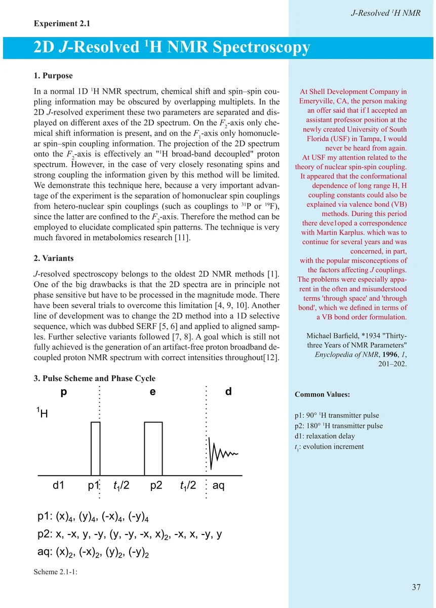
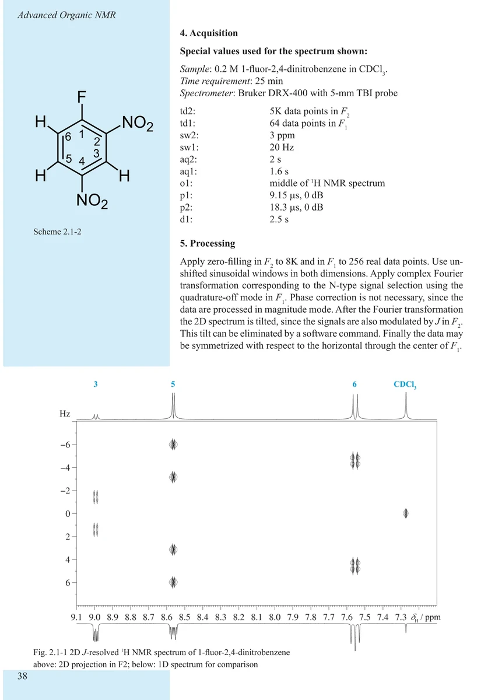
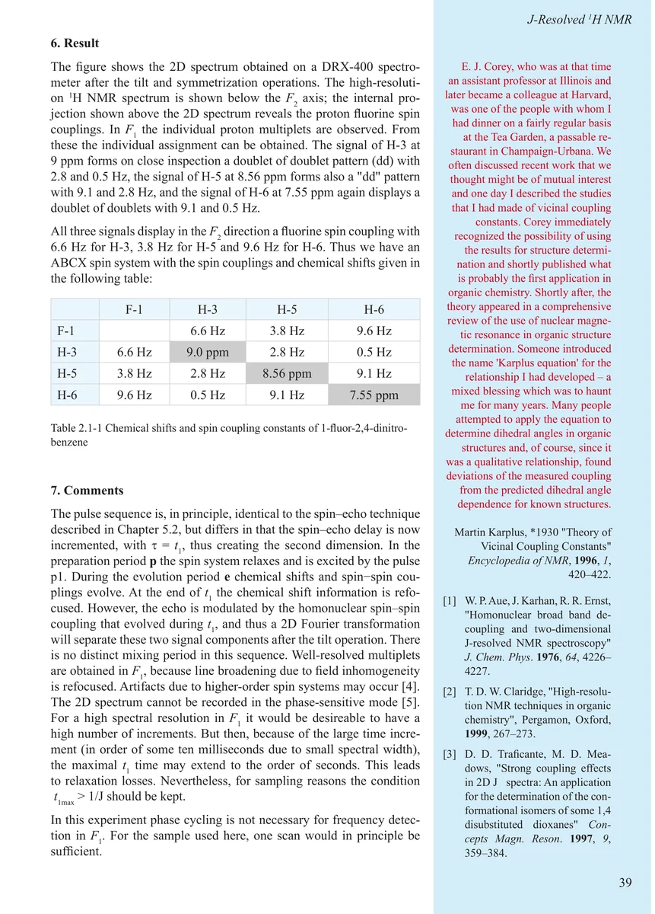
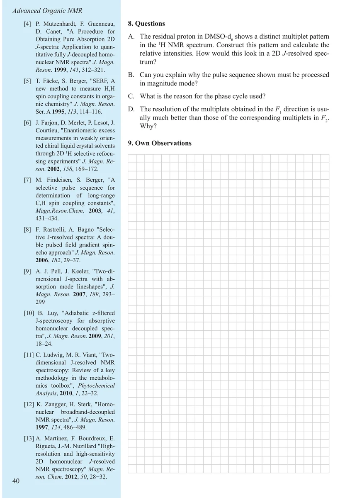

Item 2.1
2D J-Resolved 1H NMR Spectroscopy
二维 J 分辨 ¹H NMR 波谱
PDF 47–50 · 原书 37–40 · Advanced Organic NMR Spectroscopy




核磁共振实验方法、脉冲序列与谱图实践
Item 2.1
二维 J 分辨 ¹H NMR 波谱
PDF 47–50 · 原书 37–40 · Advanced Organic NMR Spectroscopy



